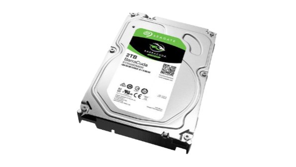

Tema 2: Komponente
Komponente računalnika so tiste, ki jih lahko najdemo znotraj njega inzdruženo omogočajo njegovo delovanje. Spodaj so naštete najbolj
pomembne ter najbolj popularne za uporabo
Centralna procesna enota (CPU):
Deluje kot "možgani" računalnika, izvaja računske operacije inizvršuje programe. Na modernih računalnikih je običajno večjedrni (multi-core) procesor, kar omogoča hkratno izvajanje več nalog.


Matična plošča (Motherboard):
Glavna vezna plošča, ki povezuje vse glavne komponente računalnika,kot so CPU, pomnilnik, grafična kartica, trdi diski, napajalnik itd.
Na matični plošči so tudi različni priključki in reže za razširitvene kartice in dodatne naprave.
Delovni pomnilnik (RAM):
Služi kot trenutno shranjevanje podatkov in navodil, do katerih CPUlahko hitro dostopa. RAM je bistvenega pomena za tekoče delovanje
operacijskega sistema in aplikacij.
Grafična kartica (GPU):
Skrbi za obdelavo grafike in prikaz slike na monitorju. Uporablja se priigrah, oblikovanju in drugih grafikah intenzivnih nalogah. Grafične
kartice lahko vsebujejo tudi lasten pomnilnik (VRAM), ki izboljša
zmogljivost pri obdelavi grafičnih podatkov.
Trdi disk (HDD ali SSD)
porablja se za dolgoročno shranjevanje podatkov, kot so operacijskisistem, aplikacije, dokumenti, slike, glasba itd. Trdi diski uporabljajo
gibajoče se dele za shranjevanje podatkov, medtem ko so SSD-ji
hitrejši in zanesljivejši, saj uporabljajo pomnilniške čipe.

Napajalnik (Power Supply Unit - PSU):
Pretvarja električno energijo iz stenske vtičnice v oblike, ki jihpotrebujejo druge komponente računalnika, kot so enosmerna
napetost (DC) za CPU, GPU in druge dele.
Ohišje:
Ohišje ali stolp, v katerem so nameščene vse komponenteračunalnika. Ohišje zagotavlja zaščito pred zunanjimi vplivi ter
omogoča urejenost in dostopnost komponent.
Hladilni sistem (Cooling System):
Hladi komponente, ki proizvajajo veliko toplote, kot je CPU in GPU, dapreprečuje pregrevanje. To vključuje ventilatorje, hladilne bloke in
toplotne cevi.